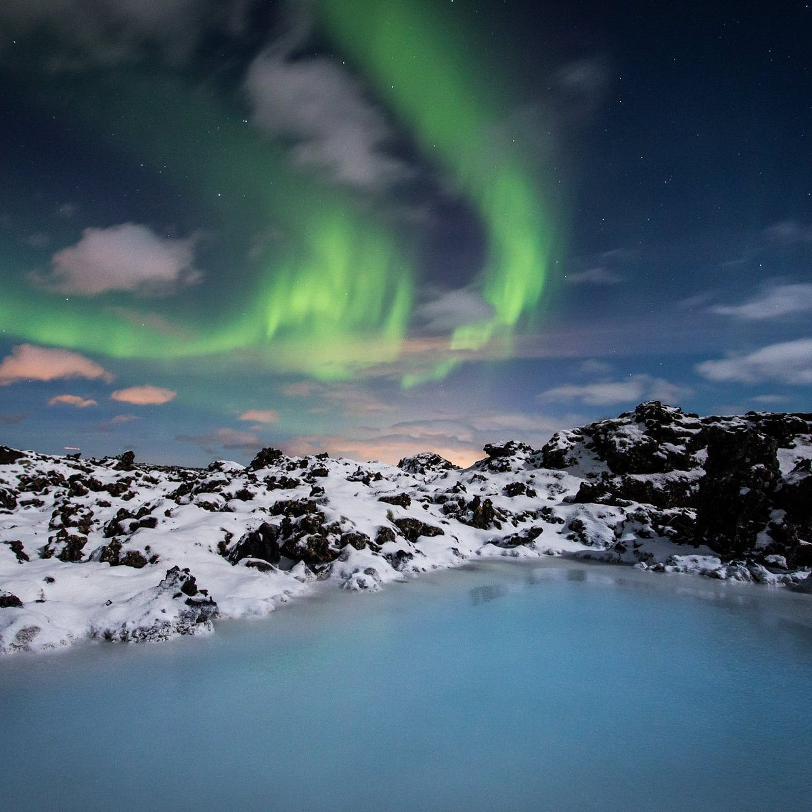

Texto escondido
Top
Islandia
História
Razões
Atrações
Dicas
Atrações Turísticas Principais
Damos a conhecer as Atrações Turísticas Principais
Região de Reykjavík (capital)
Hallgrímskirkja (igreja icônica)
Harpa Concert Hall
Lagoa Azul (Blue Lagoon) – spa geotermal

Museu Nacional e Saga Museum
Círculo Dourado (Golden Circle)
Parque Nacional Þingvellir (Patrimônio da UNESCO, onde o parlamento islandês foi fundado)
Geysir e Strokkur (fontes termais que lançam jatos de água quente)
Cachoeira Gullfoss (uma das mais famosas da Islândia)
Costa Sul
Cachoeiras Seljalandsfoss e Skógafoss
Praia de areia preta de Reynisfjara
Glaciar Vatnajökull
Outros Destinos Naturais
Península de Snæfellsnes (inspiração para "Viagem ao Centro da Terra", de Júlio Verne)
Norte da Islândia (cidade de Akureyri, cachoeira Godafoss, observação de baleias)
Ilhas Vestmann (formadas por atividade vulcânica recente)
Fiordes do Oeste (Westfjords)
Cachoeira Dynjandi – Uma das mais impressionantes da Islândia, com várias camadas de quedas de água.
Látrabjarg – Maior penhasco de pássaros da Europa, perfeito para observar puffins de perto.
Hornstrandir Nature Reserve – Uma das áreas mais remotas e intocadas da Islândia, ideal para trilhas e observação da vida selvagem.
Rauðasandur – Praia de areia avermelhada, uma raridade no país.
Região Central
Landmannalaugar – Montanhas coloridas, trilhas incríveis e fontes termais naturais.
Askja – Caldeira vulcânica com um lago azul impressionante, acessível apenas no verão.
Hveradalir – Vale geotermal com fumarolas, piscinas de lama borbulhante e paisagens surreais.
Sprengisandur – Rota off-road que atravessa o interior árido da Islândia, acessível apenas no verão.
Titulos XML
Titulos XSD
.webp)